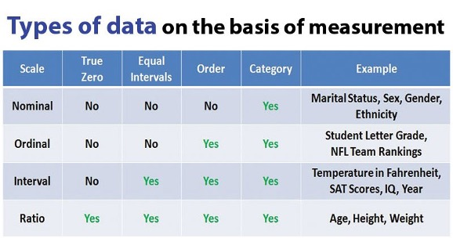

Associate Professor | School of Information Science
“A theory is a set of interrelated constructs (concepts), definitions, and propositions that present a systematic view of phenomena by specifying relations among the variables, with the purpose of explaining and (or) predicting the phenomena.” (Kerlinger, 1986)
“A theory is a way of making sense of a disturbing situation.” (Kaplan, 1964)
Dubin (1978)
“The strategies and tools used to collect evidence necessary for building or testing explanations (theories) about that which is being studied.”
Research: “Disciplined method of gaining new information, building knowledge, or answering questions; also called disciplined inquiry; implies a systematic investigation with underlying guidelines regardless of the particular research paradigm.”
4 Broad Categories:
What is the purpose of experimental research? What is its central characteristic?
What is the purpose of survey research?
What five conditions must be met to trust generalizations made on the basis of quantitative survey methods?
To make trusthworhty generalizations from surveys…
The general framework for quantitative research includes 3 main approaches:
The comparative approach also makes a comparison of a few groups on the dependent variables. However, the groups are based on an attribute independent variable, such as gender.
The associational approach, sometimes called correlational, has two or more usually continuous variables for the same group of participants, which are related or associated.
How is the post-positivist different from the constructivist communication researcher?
In the postpositivist/quantitative framework, a specific plan is developed prior to the study.
In the constructivist/ qualitative approach, less structure is placed on the use of specific guidelines in the research design.
Derived from our metatheoretical assumptions:
What is the BRIDGE between theory and research?
“The research hypothesis is the bridge between theory and research.”
What is the PURPOSE of Quantitative Research?
Quantitative research:
What are the three primary principles outlined in the Belmont Report?
What are 1-2 ethical issues related to conducting a study?
What are 1-2 ethical issues related to quantitative methods?
What are 1-2 ethical issues related to data collection?
What are 1-2 characteristics of quantitative communication researchers?
“It is usually a sentence or statement about the relationship between two or more variables” (GML, p. 23)
Research problems commonly come from:
Good research problems are grounded in empirical and theoretical literature, stated clearly, testable, feasible, and of vital interest to you
Is this so broad that it isn’t feasible?
Is this so narrow that the impact will limited?
Can make it hard to find literature or establish the gap that you will fill.
Is there a reason the thing you are interested in is unexplored?
Quantitative researchers tend to place considerable emphasis on finding gaps in the literature so they tend to study relatively well-researched areas.
Reinard (1998) argues that good problem statements are NOT:
Examples:
Of all the steps in the research process, reviewing the literature is one of the most important due to it being the fundamental step that can ensure a rigorous and meaningful research design and results
Basically, be thorough with your literature review so that (1) you have identified gaps, (2) your methods are appropriate, and (3) you know how your work connects to past work.
These are not interchangeable
Isomorphism refers to how well your conceptual definition of a construct matches your operationalization.
Remember: Variables are “any concept that has two or more values”
“variables thought to influence changes in another variable (the dependent variable).”
Known as the IV (sometimes called explanatory variable or PREDICTOR variable in non-experimental research)
When more than two independent variables are used in a “factorial design” the IVs are referred to as factors.
“variables are thought to be changed by another variable (the independent variable).”
Know as the DV (sometimes called outcome variable or CRITERION variable in non-experimental research)
In non-experimental research, the IV can be measured as well.
4 levels of measurement used to describe the range and the relationship among the values a variable can take.
“a formal question posed to guide research.”
The explicit questions researchers ask about the variables that interest them.
When researchers feel confident enough to make a prediction, they advance a hypothesis, or
“a tentative statement about the relationship between independent and dependent variable(s).”
A good hypothesis has 3 characteristics:
The simplest way to phrase a hypothesis is to create a statement of simple relationships:
There will be a direct (or positive, negative, inverse, or curvilinear) relationship between (insert favorite first variable of interest) and (insert favorite second variable of interest).
OR
As (insert favorite first variable of interest) increases (or decreases, etc.) the (insert favorite second variable of interest) decreases (or increases, etc.)
Bostrom (1998):
“Hypotheses repsent a formal testing of a theory and a research question represent a more general exploration of phenomena…the choice of hypotheses as opposed to research questions is determined largely by the state of theory in the area, the statistical procedure used, and the preferences of the researchers.”
“(two-direction or non-directional hypothesis) predicts a relationship without specifying the nature of that relationship”
“(directional hypothesis) predicts a relationship between independent and dependent variable(s) and specifies the nature of that relationship.”
direct relationships
inverse relationships
“Effects of each IV working alone .”
“Due to the effects of multiple IVs working together.”
Keep track of the handout for now. We will get to these in Ch. 10 (Week 6)!
Planning and Designing Communication Research: Who Are You Studying?
At this point, you should have a basic understanding of what you want to study. The logical next step is to discuss how to select your sample and determine the number of people that you will need. Lecture topics also include tradeoffs across sampling approaches, internal and external validity, significance testing, and power.